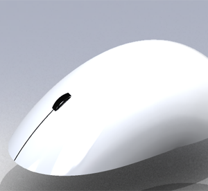

Zgoraj so slike mojega projekta, in sicer alarma na vrvico. Deluje tako, da ko se vrvica premakne naredi stik in alarm zacne piskati.
Zgornje slike prikazujejo izdelavo antene za HDTV. Naredil sem jo iz alufolje in kartona. Na koncu sem nanjo prepel se dvo zilni kabel. Antena je nasla 15 kanalov (slo1, slo2, slo3, popTV, A kanal, PlanetTV...)

Na slikah je prikazanih nekaj izdelkov, ki sem jih naredil s SolidWorksu.